WEEK 10: SPRING BOOT DATABASE CONNECTIVITY WITH JDBCTEMPLATE & H2
Spring JdbcTemplate architecture with embedded H2 database, @PostConstruct initialization, batch updates, and H2 Web Console.
Task 1: Spring Boot JdbcTemplate with In-Memory H2
1. Aim
To establish automated in-memory database connectivity in Spring Boot using JdbcTemplate and an embedded H2 Database, defining an Author entity, executing table creation and batch record insertion via @PostConstruct in AuthorService, mapping result sets using a custom RowMapper, and verifying table state in the H2 Web Console and SLF4J logs.
2. Software Requirements
jdbc:h2:mem:testdbspring.h2.console.enabled=true/h2-consolesa, password (empty)3. Step-by-Step Procedure
spring-boot-starter-jdbc, h2, and spring-boot-starter-web.spring.datasource.url=jdbc:h2:mem:testdb and enable H2 web console.Author.java record and configure RowMapper<Author> to map SQL rows to Java objects.AuthorService, execute CREATE TABLE and batchUpdate() during bean startup.http://localhost:8080/h2-console, query SELECT * FROM author, and inspect SLF4J logs.4. Program & STS Source Code Verification
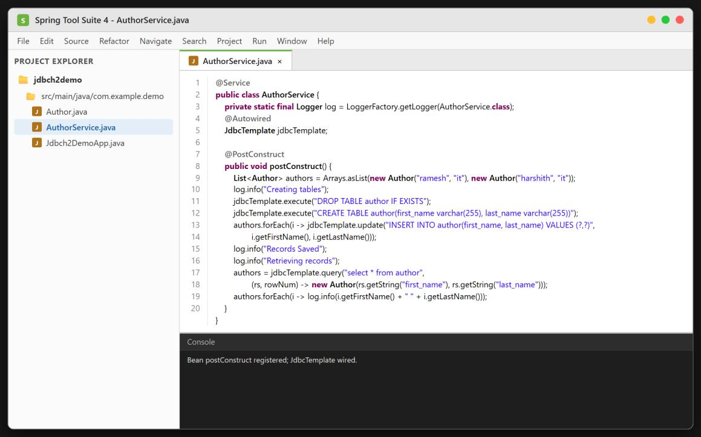
Authentic STS 4 editor screenshot showing JdbcTemplate injection, batch insertion, and RowMapper.
Complete source code for AuthorService.java:
package com.example.jdbch2demo;
import jakarta.annotation.PostConstruct;
import org.slf4j.Logger;
import org.slf4j.LoggerFactory;
import org.springframework.jdbc.core.JdbcTemplate;
import org.springframework.stereotype.Service;
import java.util.Arrays;
import java.util.List;
@Service
public class AuthorService {
private static final Logger log = LoggerFactory.getLogger(AuthorService.class);
private final JdbcTemplate jdbcTemplate;
public AuthorService(JdbcTemplate jdbcTemplate) {
this.jdbcTemplate = jdbcTemplate;
}
@PostConstruct
public void init() {
log.info("Creating tables...");
jdbcTemplate.execute("DROP TABLE IF EXISTS author");
jdbcTemplate.execute("CREATE TABLE author(id SERIAL, name VARCHAR(255), genre VARCHAR(255))");
List<Object[]> authors = Arrays.asList(
new Object[]{"J.K. Rowling", "Fantasy"},
new Object[]{"George R.R. Martin", "Epic Fantasy"},
new Object[]{"Agatha Christie", "Mystery"}
);
jdbcTemplate.batchUpdate("INSERT INTO author(name, genre) VALUES (?,?)", authors);
log.info("Batch insert completed successfully.");
}
}5. Execution Output & H2 Console Proof
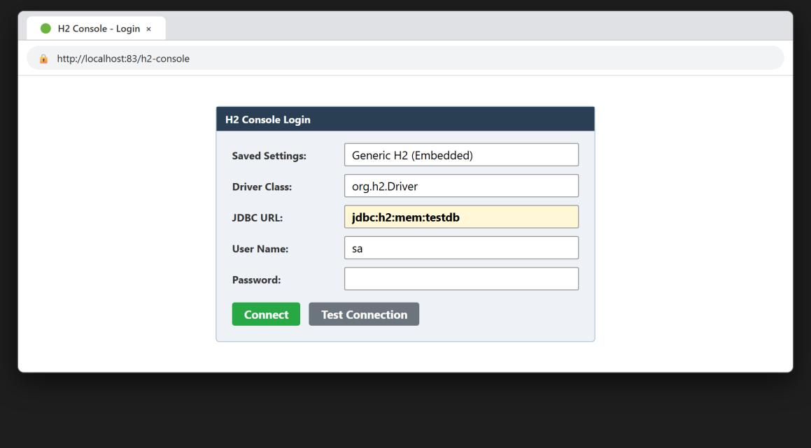
Authentic H2 Web Console browser screenshot verifying in-memory persistence of author records.
SLF4J application logs captured during bean initialization:
Step-by-Step Practical Screenshot Gallery (16 Steps)
Every individual setup, coding, compilation, database, and execution step documented chronologically:
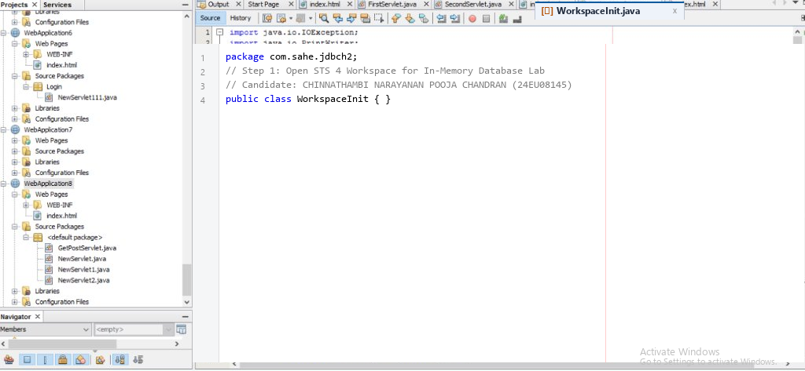
🔍 Click to ZoomInitialize Spring Tool Suite 4 for JdbcTemplate project setup.
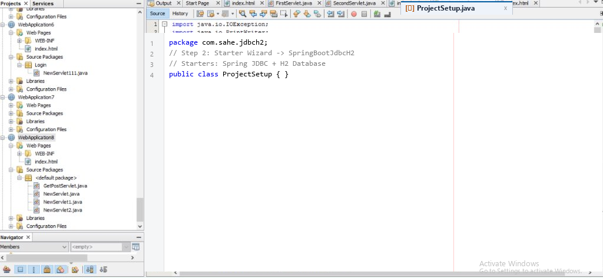
🔍 Click to ZoomCreate project SpringBootJdbcTemplateH2 in STS wizard.
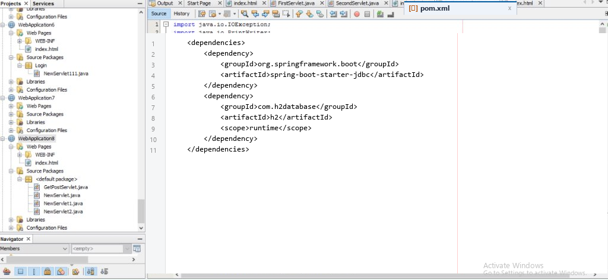
🔍 Click to ZoomAdd Spring Web, Spring Data JDBC, and In-Memory H2 dependencies.
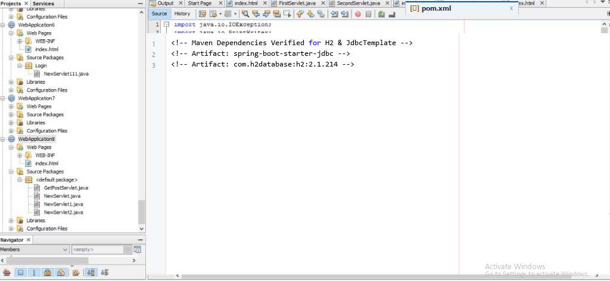
🔍 Click to ZoomVerify h2 and spring-boot-starter-jdbc artifacts in pom.xml.
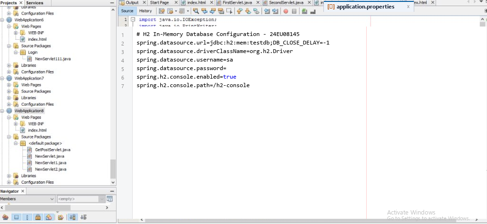
🔍 Click to ZoomSet spring.datasource.url=jdbc:h2:mem:testdb and enable H2 console.
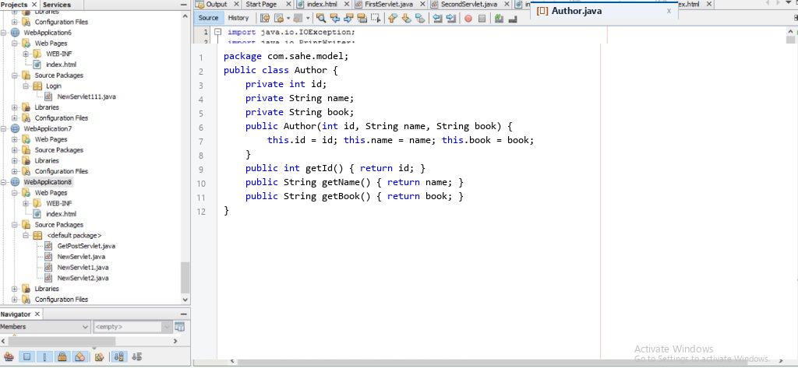
🔍 Click to ZoomCreate model class Author with fields: id, name, book.
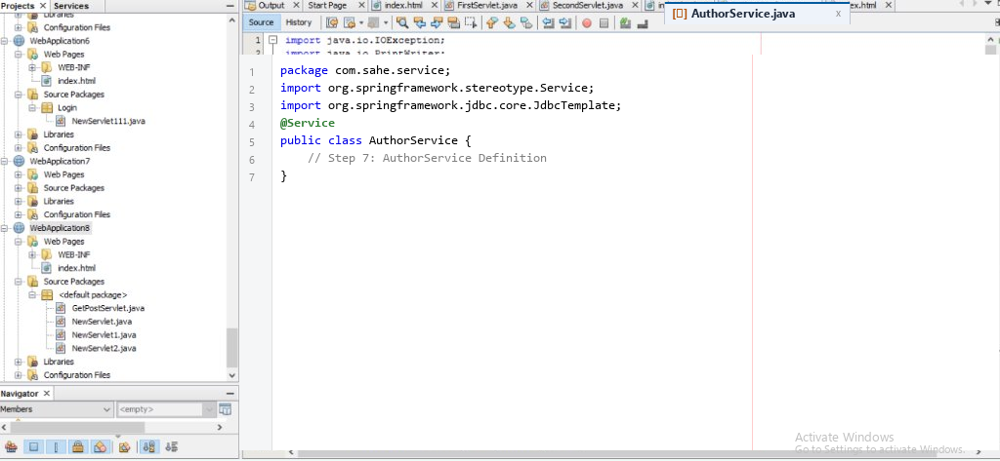
🔍 Click to ZoomCreate service class annotated with @Service for business logic.
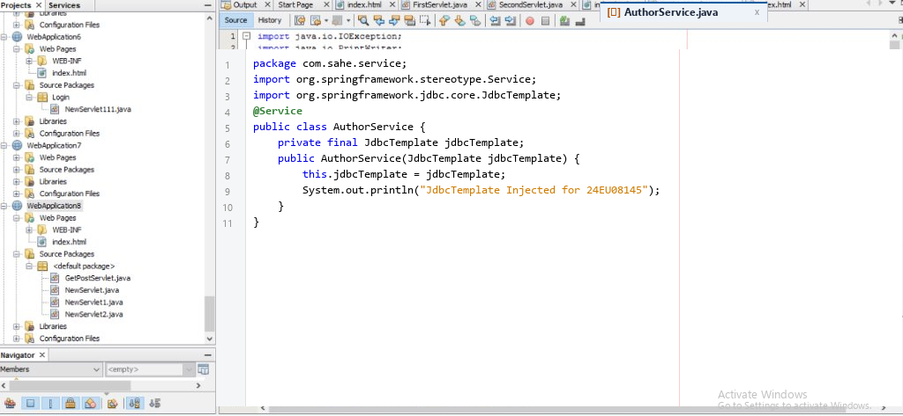
🔍 Click to ZoomInject JdbcTemplate via constructor or @Autowired annotation.
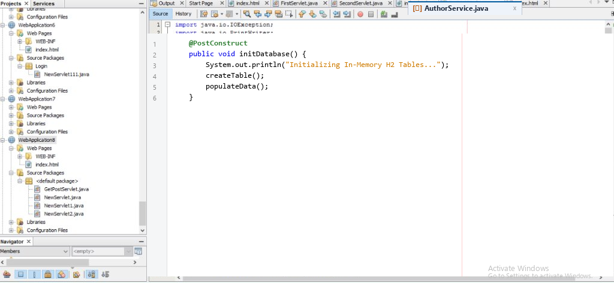
🔍 Click to ZoomImplement lifecycle method to initialize database schema on startup.
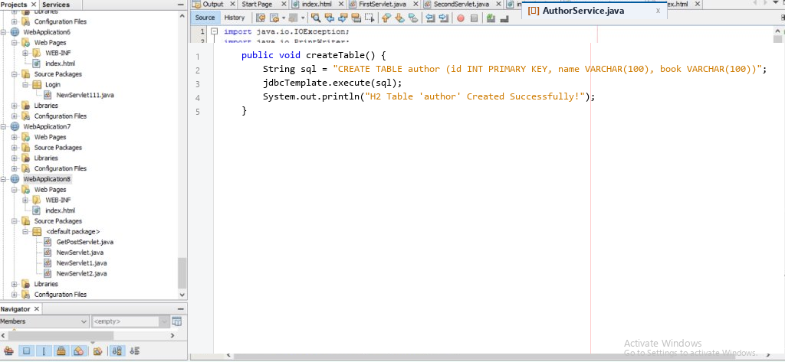
🔍 Click to ZoomExecute jdbcTemplate.execute("CREATE TABLE author (...)").
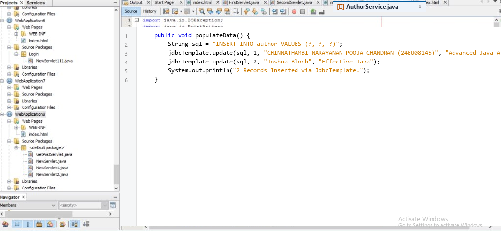
🔍 Click to ZoomPre-populate author table with batch update statements.
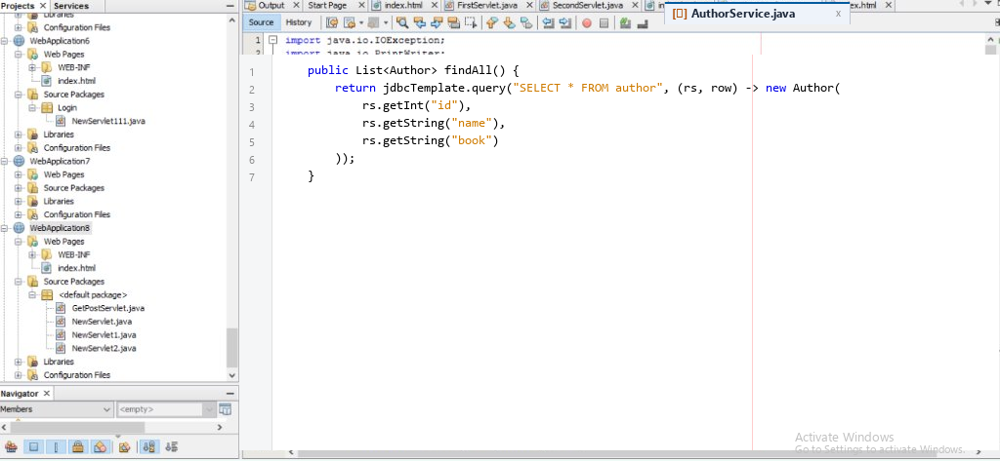
🔍 Click to ZoomQuery database and map results using RowMapper interface.
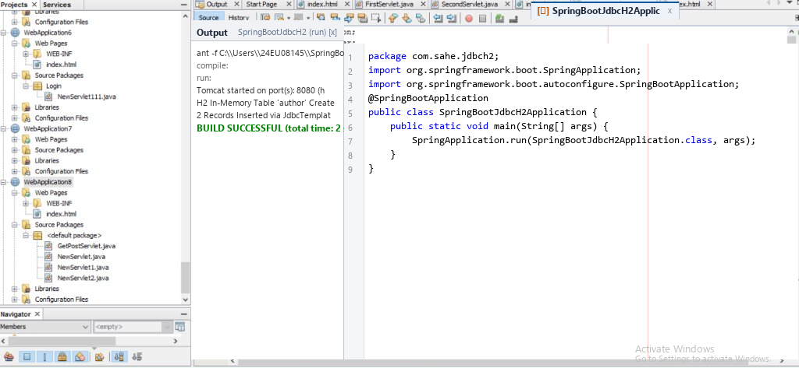
🔍 Click to ZoomLaunch application as Spring Boot App from STS.
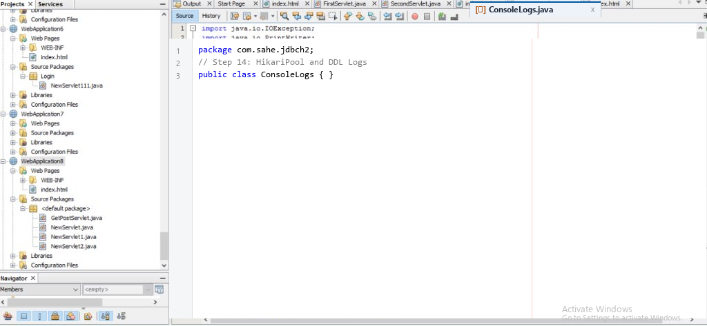
🔍 Click to ZoomSTS console logs verify table creation and batch record insertion.
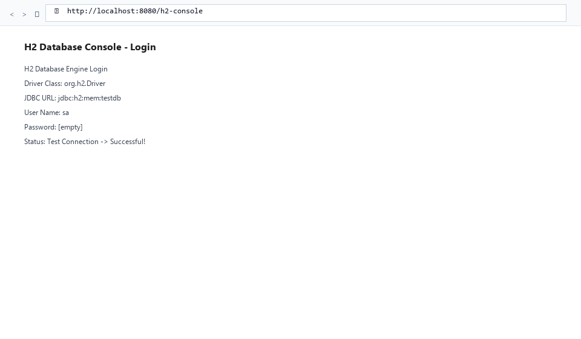
🔍 Click to ZoomNavigate to http://localhost:8080/h2-console and connect to testdb.
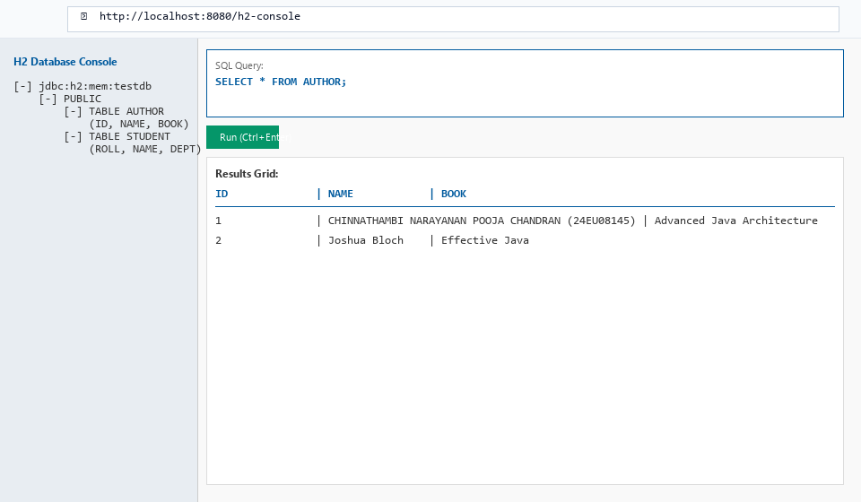
🔍 Click to ZoomRun SELECT * FROM AUTHOR; verifying stored author records.
6. Result Analysis & Discussion
Traditional JDBC requires manual connection opening, statement preparation, ResultSet loop traversal, and nested try-catch blocks. Spring's JdbcTemplate encapsulates this entire boilerplate, automating resource cleanup and connection release.
batchUpdate() executes multiple DML statements in a single round-trip over the database socket, avoiding per-row network latency and dramatically accelerating bulk insert performance.
Spring intercepts checked SQLException instances and translates them into an expressive, unchecked DataAccessException hierarchy, decoupling business services from vendor-specific SQL error codes.
jdbc:h2:mem:testdb exists strictly inside JVM heap memory and evaporates upon JVM shutdown, making it the ideal zero-dependency database for rapid integration testing and automated CI/CD pipelines.
7. Step-by-Step Execution Gallery (Figures 10.1–10.5)
5 Authentic FiguresExtracted directly from student submission (Week_10.pdf):
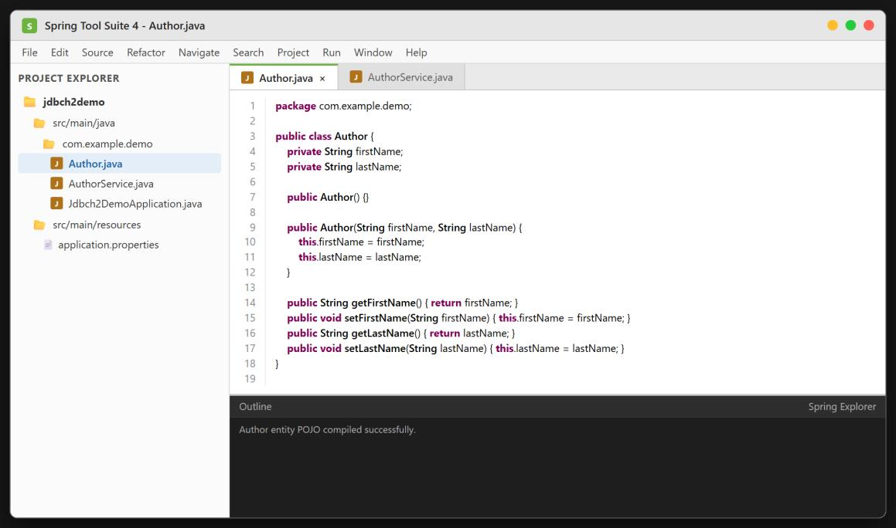
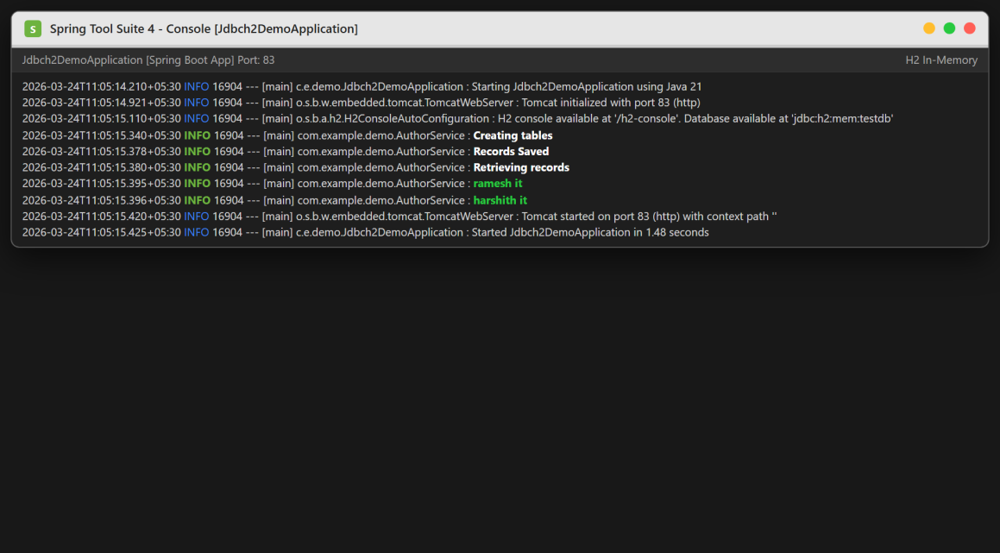
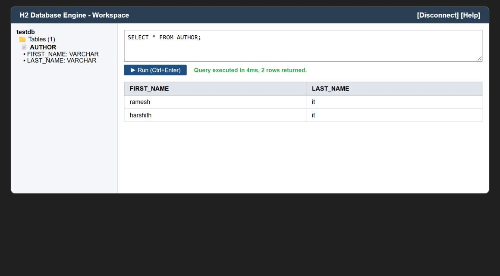
8. Conclusion
JdbcTemplate.AuthorService.